Music has always been a significant part of my life, whether it was doing music myself, attending concerts, or planning concerts on campus.
I grew up singing, playing violin, and playing piano. I have a lot of memories performing places all over the state. I also was in a few musicals in high school.
One of my favorite things to do is go to concerts. From music festivals to small night clubs, I have always had the best time.
This past month I had the opportunity to plan my first concert on my own as Vice President of Events in Michigan Music Business Club. I learned a lot from this experience and had a lot of fun along the way.
 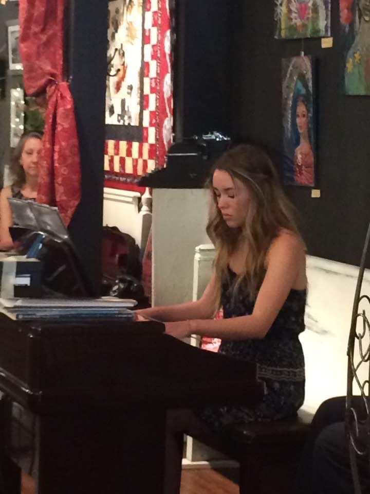
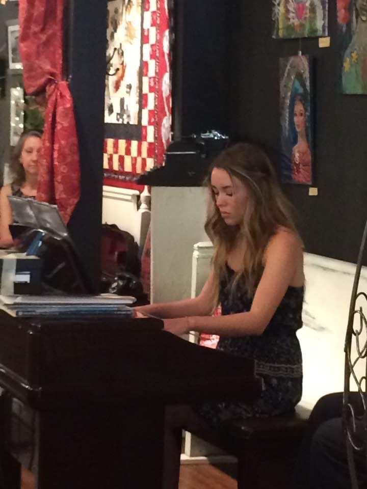
 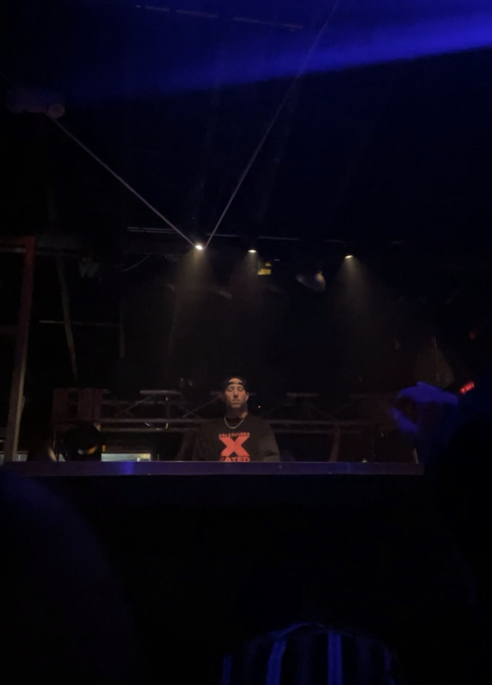
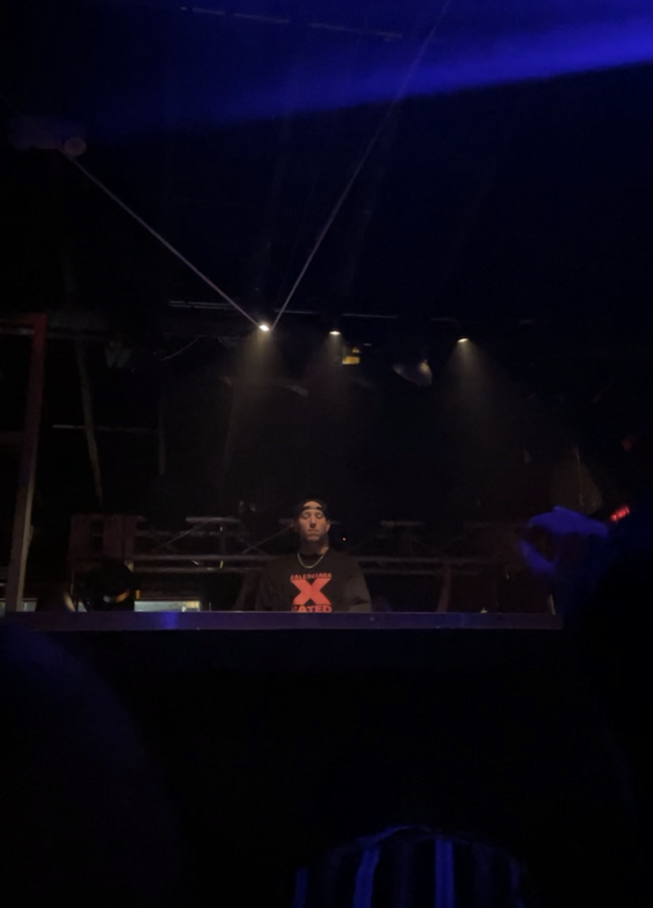
 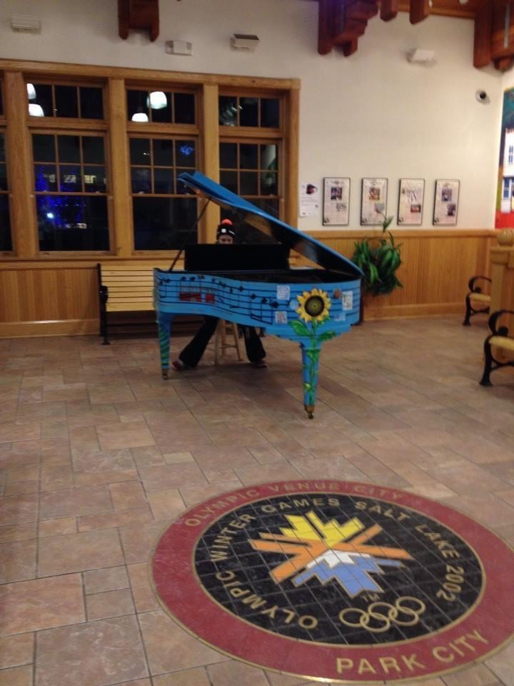
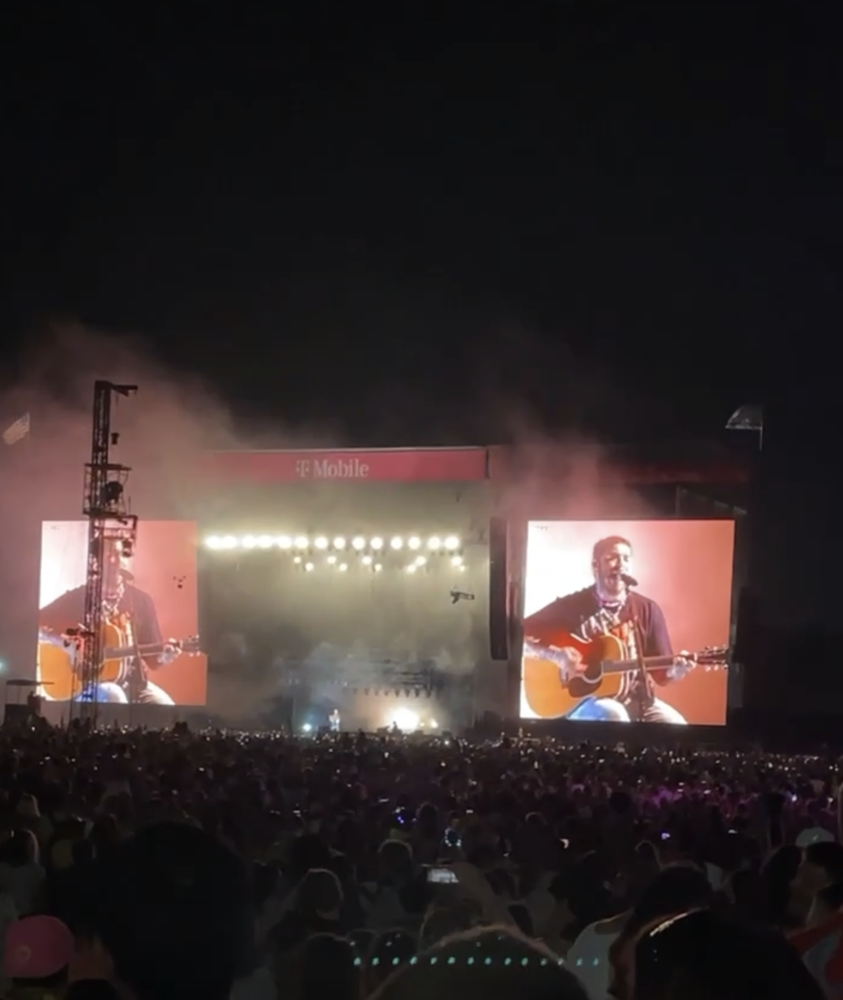
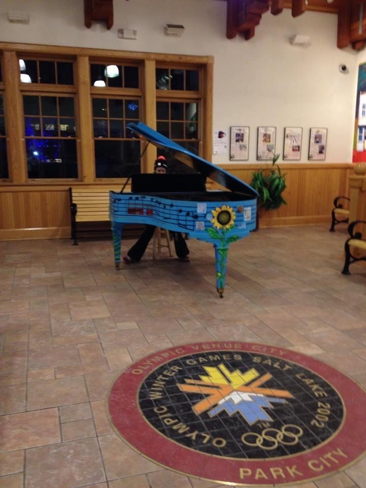
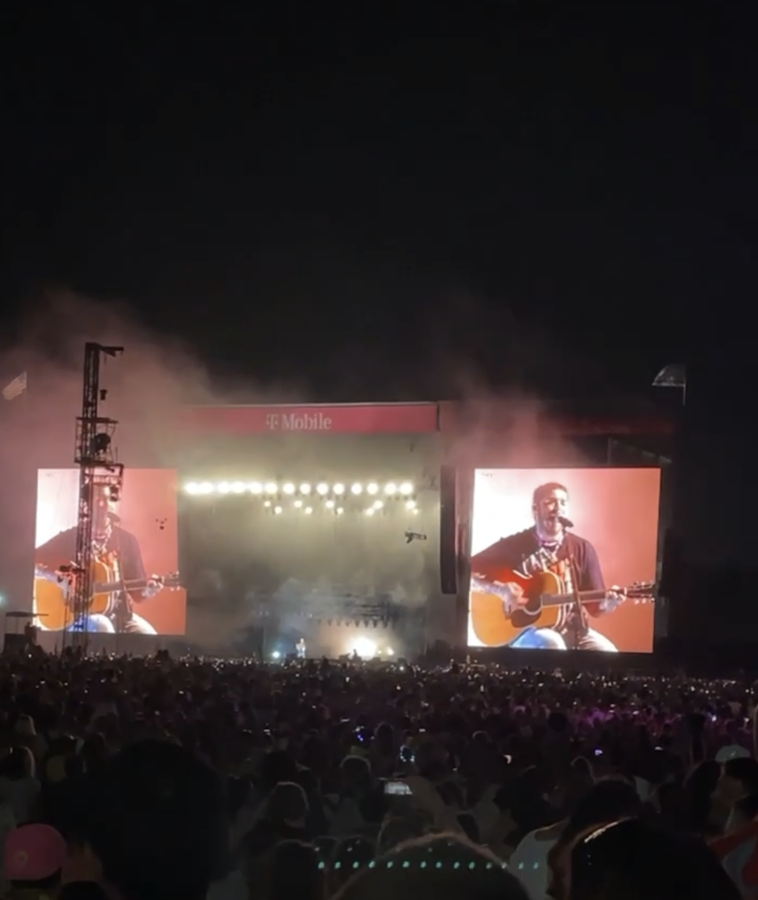
 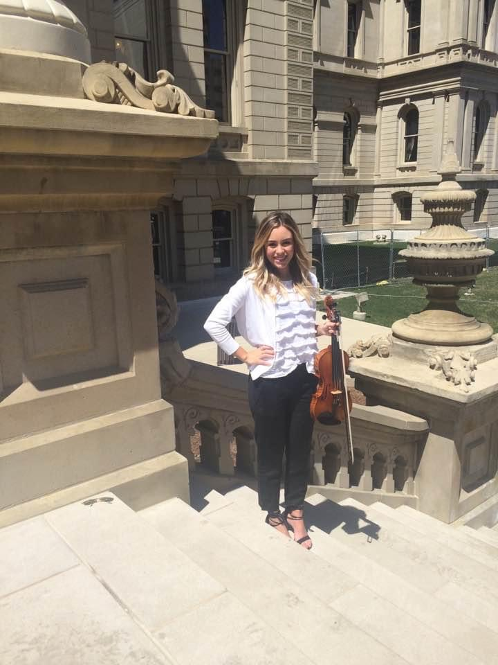
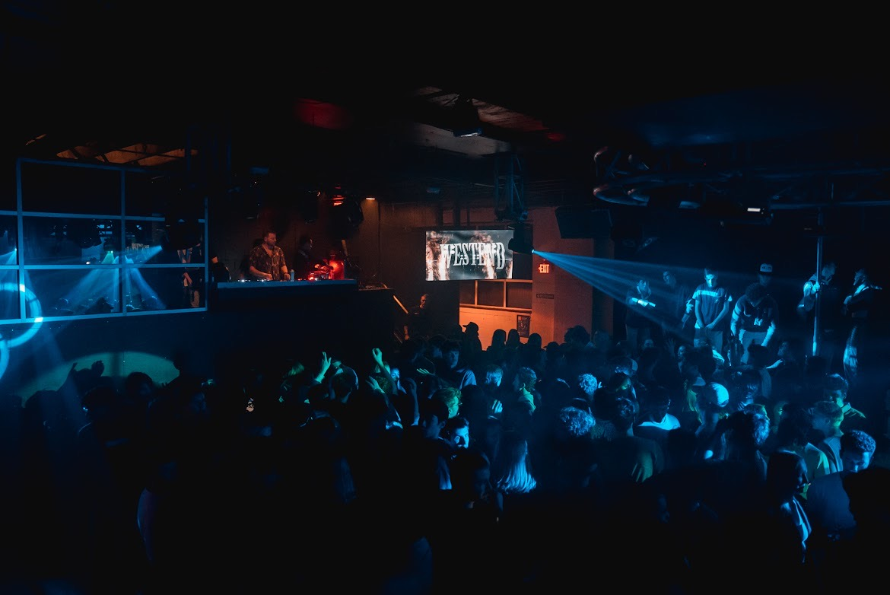
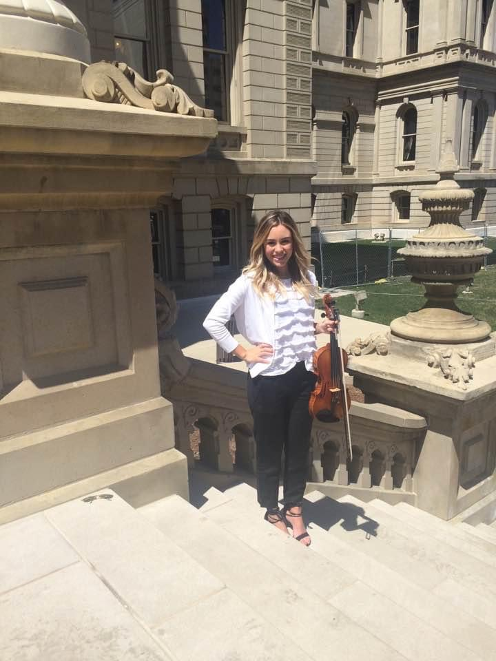
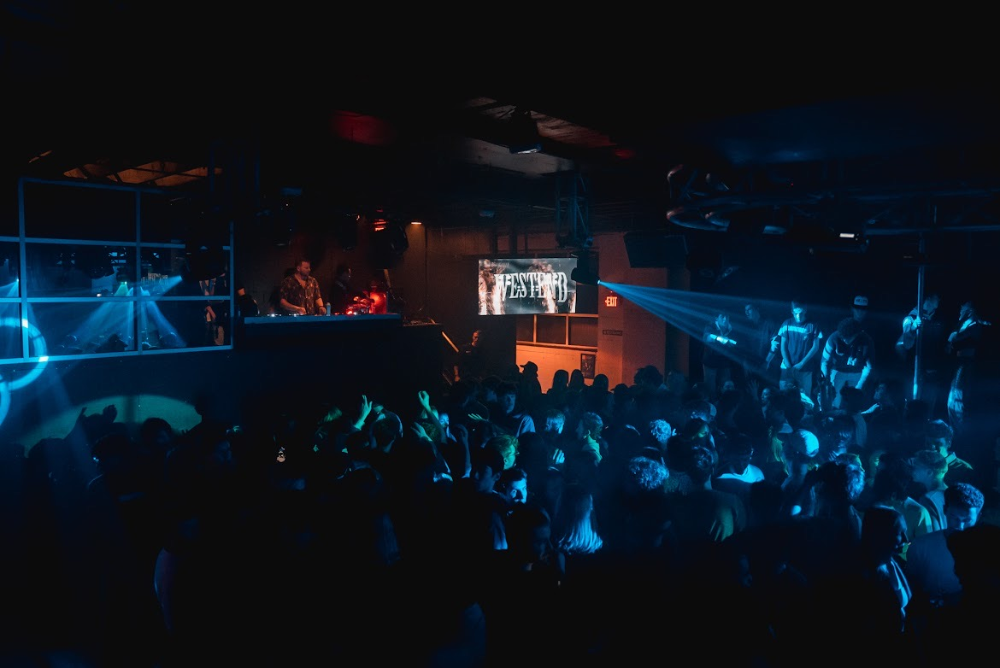
 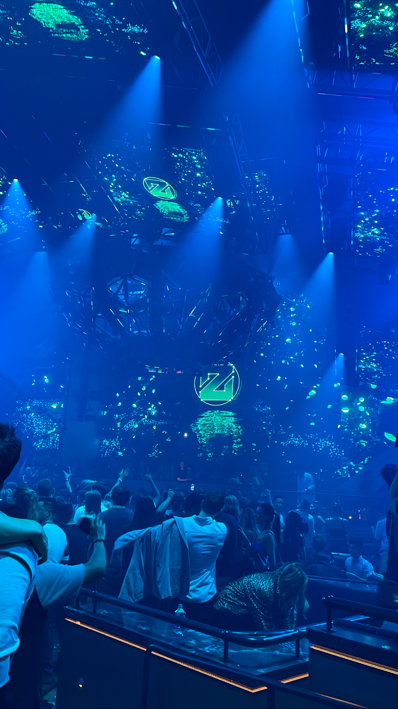
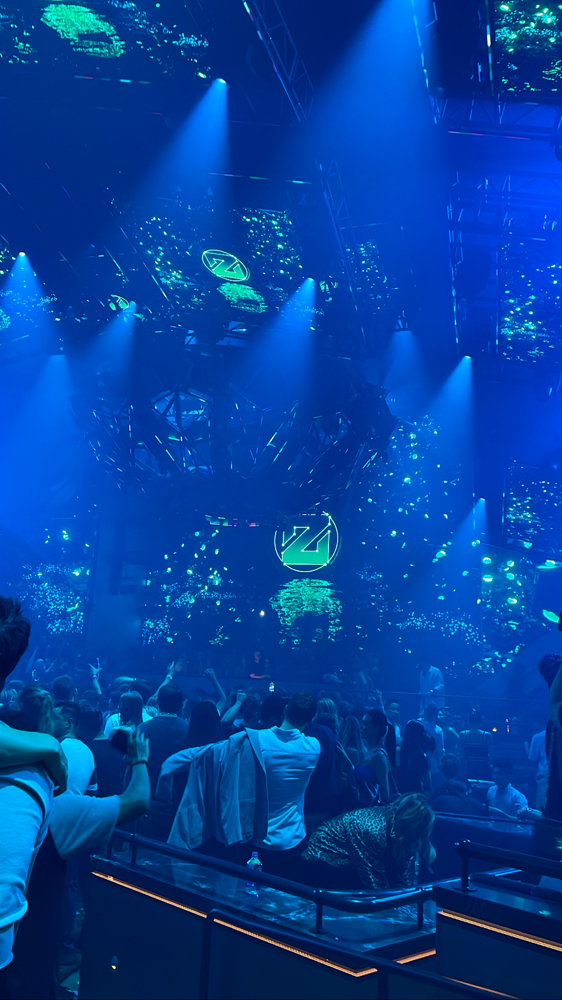